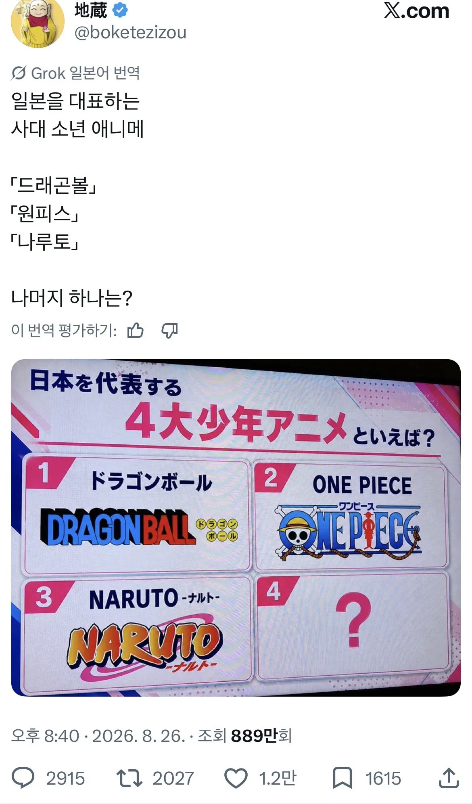
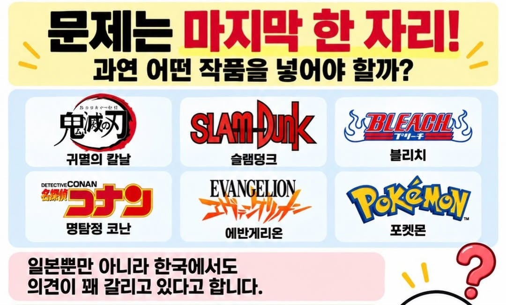

저 짤 후보엔 없지만 헌터X헌터, 강철의 연금술사, 죠죠의 기묘한 모험도 매우 유력한 후보라고함


저 짤 후보엔 없지만 헌터X헌터, 강철의 연금술사, 죠죠의 기묘한 모험도 매우 유력한 후보라고함
소년만화 장르 + 점프 연재작 + 흥행 다 들어가는게 귀칼이긴 한듯 ㅋㅋ
죠죠 좋아하지만... 슬램덩크일 듯
러브라이브
코난일듯. 영화적으로 성공은 코난이 압도적아닌가
포켓몬.
포켓몬이 압도적아님??
포켓몬은 애니로 성공했다기 보다는 게임이 원작이고 게임 매출이 더 커서...
영화적 성공을 논할거면 후보에 귀멸의 칼날이나 포켓몬이 있는데..?
일본에서는 그렇지 일본한정이면 코난
글로벌적으로 가면 귀칼 개인적으로는 슬램덩크
포케몬은 게임으로 성공했지 만화나 애니는 부수적인거니까
애니메이션이면 귀칼아님?
클로드가 귀칼이 저중에 가장 높대. 굿즈 제외하고
소년만화라서 귀칼이 들어가야할듯? 저기 목록에 없는걸 가져와야하지 않나 싶은데..
도라에몽
이거 짤 볼때마다 왜 하필 소년만화가 아니고 애니인지 궁금함
슬덩은 진짜 왜 계속 끼냐 ㅋㅋㅋㅋ 엔딩 제대로 못 낸건 명작반열에 좀 껴놓지마라고 ㅅㅂ 이러다 체인소맨도 넣겠네
굳이 4대로 한정하는 이유가 머지 ㅋㅋㅋㅋ
재밌으니까
진격의 거인
저거 다 개 쌉 졸작으로만들정도로 나는 진격거가 압도적이라고 생각함
ㄹㅇ
그냥 3대 해
기준을 뭘로 잡냐에 따라 다를거 같은데
그 기준잡기를 해야 한다는 점에서 저 위 3개 애니에 비빌수가 없음
그냥 3대 애니
슬램덩크를 어떻게이겨 ㅅㅂ
위에 3개의 특징에 장기연재라는 요소를 감안하면
코난이 맞을듯
흙집사
드래곤볼 원피스 슬램덩크 코난 인정. 나루토는 저기 모여있는 애니들 사이에 가야 할텐데 왜?
나루토 저기 사이에 가면
무조건 4대안에 들어가니깐
500편 넘어가는 장편 애니가
시청률 3-6퍼센트 먹는게
쉬운게 아님
내가 잘못봤네. 애니였구나 원작 만화인줄 알았어.
슬램덩크 존나 명작이지만 완결좆같이낸건 사실이고 이노우에는 지금도 베가본드 완결조차 못내고있음
나루토는 그래도 그럴듯한 완결을 낸 소년만화였으니 저기 들어갈만하지
유명한걸론 포켓몬이 압도적이잖아
뭐 ip하나로만 따지면 포켓몬을 이길건없긴해
에반게리온?
심연중에 개심연 씹덕픽이 왜 후보에??
비슷한 시기에 연재되던걸 묶어야지......
강연
짱구로 하자
아따 그냥 한국은 원나블이여
영향력으로 보자면 코난 아닐까
우선 코난 커칼 포켓몬이 저기 낄급아니다
포켓몬은 또 다른 장르로 생각해야될거같고
코난도 세긴한데 '소년'으로 따지면 또 아닌거같고
그리고 너무질질끌어서 점점 별루임
슬덩은 미국시장에선 안먹어주고
어렵네
일본을 대표하는 이라는 타이틀이 들어간 이상
포켓몬이 맞다고 봄
걍 3대로 맞자 정하기도 힘들다
원탑
진격거
반박시 내말맞음
누가봐도 에반게리온 아닌가?
문화적 영향력으로 보면,,,
의외로 진격거가 없네 이런 앙케이트엔 꼭 있는 것처럼 유난 떨잖아
저 3개랑 비교하면 포켓몬 같은데
포켓몬이지 물론 게임IP에 큰 힘을 얻긴 했지만
블리치